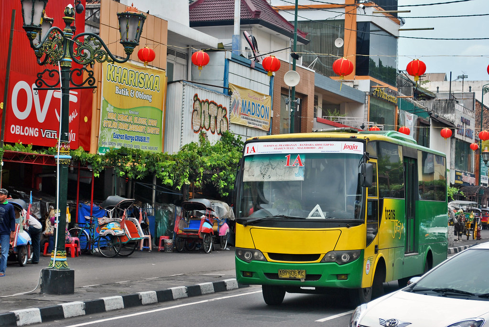
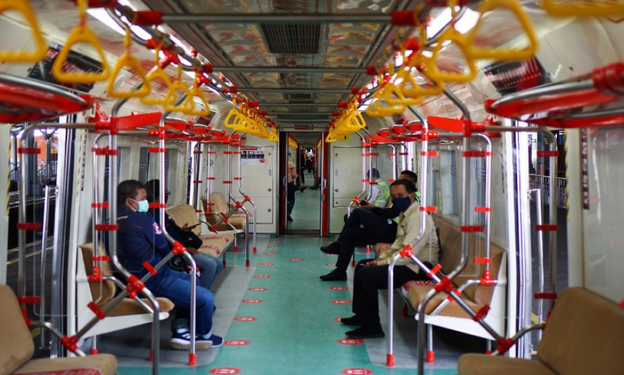

Trans Jogja
Trans Jogja merupakan alat transportasi berupa bus kota yang dikelola oleh Dinas Perhubungan Yogyakarta. Trans Jogja berfungsi sebagai angkutan umum dengan harga dan fasilitas yang ramah. Apa saja sih, keuntungan naik trans jogja? Efisiensi waktu, Tempat Duduk Aman dan Nyaman, Ramah Disabilitas, Ramah lingkungan dan dompet
Trans Jogja is a means of transportation in the form of city buses which are managed by the Yogyakarta Department of Transportation. Trans Jogja serves as public transportation with friendly prices and facilities. What are the advantages of riding Trans Jogja? Time efficiency, Safe and Comfortable Seating, Disability Friendly, Eco and wallet friendly
HargaPrice
 Rp 2.7k - 3.6k
Rp 2.7k - 3.6k
TempatLocation
 Di setiap titik halte
At every stop
Di setiap titik halte
At every stop


Becak
Becak merupakan moda transportasi yang cocok digunakan jika ingin menikmati suasana Yogyakarta. Lajunya yang perlahan membuat penumpang nyaman dan leluasa melihat pemandangan dari depan dan ke sebelah kanan - kiri. Kamu bisa memulai petualangan wisata di Yogyakarta dari Malioboro.
Becak is a suitable mode of transportation if you want to enjoy the atmosphere of Yogyakarta. The slow speed makes passengers comfortable and free to see the view from the front and to the right - left. You can start a tourist adventure in Yogyakarta from Malioboro.
HargaPrice
Rp 20.000 - 35.000
TempatLocation
Pinggiran jalan dan area Malioboro
Roadside and Malioboro area

Andhong
Bertandang ke Malioboro, tak lengkap bila tak naik andong. Dengan moda transportasi tradisional itu. wisatawan bisa ke keraton, Alun-alun Utara, pusat kaos Rotowijayan, lalu biasanya diakhiri belanja bakpia di kampung Patuk Yogyakarta.
A visit to Malioboro, is incomplete if you don't ride a carriage. With that traditional mode of transportation. tourists can go to the palace, North Square, the center of Rotowijayan shirts, then usually end up shopping for bakpia in Patuk village, Yogyakarta.
HargaPrice
Rp 50.000 - 100.000
TempatLocation
Sepanjang jalan Malioboro
Along Malioboro Street

Kereta KRL
KRL train
Solo–Yogyakarta atau disebut juga KRL Joglo adalah jaringan kereta komuter di Indonesia yang menghubungkan kota penting di Jawa Tengah dan Daerah Istimewa Yogyakarta, yaitu Kota Yogyakarta dan Surakarta.
Solo–Yogyakarta or also known as KRL Joglo is a commuter train network in Indonesia that connects important cities in Central Java and the Special Region of Yogyakarta, namely the City of Yogyakarta and Surakarta.
HargaPrice
Rp 8.000
TempatLocation
Stasiun Tugu dan Stasiun Lempuyangan
Tugu Station and Lempuyangan Station